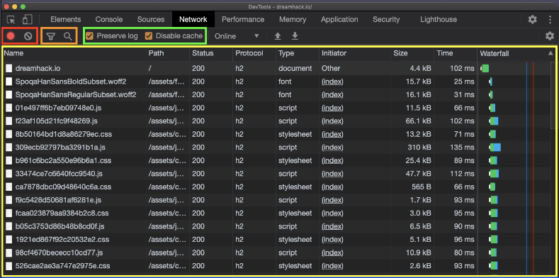

인터넷을 기반으로 구현된 서비스 중 HTTP를 이용하여 정보를 공유하는 서비스를 웹이라고 합니다. 여기서 정보를 제공하는 주체를 웹 서버(Web Server), 정보를 받는 이용자를 웹 클라이언트(Web Client)라고 합니다. HTTP란 웹상에서 서로 통신을 하기 위해 정해둔 일종의 규칙입니다. 과거에 웹은 단순히 정보를 보여주는 것에서 그쳤다면, 현재는 정보를 검색하고 직접 제품을 구매할 수 있도록 변화했습니다.
Hyper Text Markup Language(HTML) :
웹 문서의 뼈와 살을 담당합니다. 태그와 속성을 통한 구조화된 문서 작성을 지원
Cascading Style Sheets(CSS) :
웹 문서의 생김새를 지정합니다. 웹 리소스들의 시각화 방법을 기재한 스타일시트입니다. 웹 디자인을 담당합니다.
JavaScript(JS) :
Java와는 다른 것으로 Java보다 더 쉽습니다. C언어와 구조가 비슷하며, 웹 문서의 동작을 정의합니다.
JS는 이용자의 브라우저에서 실행되는데, 클라이언트가 실행하는 코드라고 하여 Client-Side Script라고도 부릅니다.
: 브라우저 개발자 도구(Devtools)는 HTML과 CSS 코드를 브라우저에서 수정하고 결과를 바로 확인 할 수 있으며, 자바스크립트 코드를 대상으로 디버거도 제공한다. 서버와 오가는 HTTP 패킷도 상세히 보여주므로 프로토콜상에서 발생하는 문제도 쉽게 발견 할 수 있다. 개발자 도구를 실행하려면 브라우저에서 F12를 눌러 사용한다.
페이지를 구성하는 HTML 검사
코드를 선택한 상태로 단축키 F2를 누르거나 더블 클릭하면, 이를 수정할 수 있다.
요소 검사 기능을 같이 활용하면 수정할 코드를 빠르게 선택할 수 있어 편리하다.
자바 스크립트를 실행하고 결과를 확인 할 수 있음
콘솔은 프론트엔드의 자바스크립트 코드에서 발생한 각종 메세지를 출력하고,
이용자가 입력한 자바스크립트 코드를 실행도 해주는 도구이다. 자바스크립트로 웹 개발을 할 때,
console 오브젝트에는 개발자 도구의 콘솔에 접근할 수 있는 함수가 정의되어 있다.
코드를 작성하면서 어떤 변수의 값을 중간에 출력해보고 싶다면, console.log 등을 유용하게 사용할 수 있다.
단축키는 Windows/Linux에서 Ctrl + Shift + J, macOS에서 Cmd(⌘) +shift(⇧) + J 이다.
HTML, CSS, JS 등 페이지를 구성하는 리소스를 확인하고 디버깅 할 수 있음
현재 페이지의 리소스 파일 트리, 파일 시스템선택한 리소스 상세 보기<디버깅 정보>
Watch : 원하는 자바스크립트 식을 입력하면, 코드 실행 과정에서 해당 식의 값 변화를 확인할 수 있다.
Call Stack : 함수들의 호출 순서를 스택 형태로 보여준다.
Scope : 정의된 모든 변수들의 값을 확인할 수 있다.
Breakpoints : 브레이크포인트들을 확인하고, 각각을 활성화 또는 비활성화할 수 있다.
쿠키를 포함하여 웹 어플리케이션과 관련된 데이터를 확인할 수 있음
Cookies에서는 브라우저에 저장된쿠키 정보를 확인하고, 수정할 수 있다.
서버와 오가는 데이터를 확인할 수 있다.
